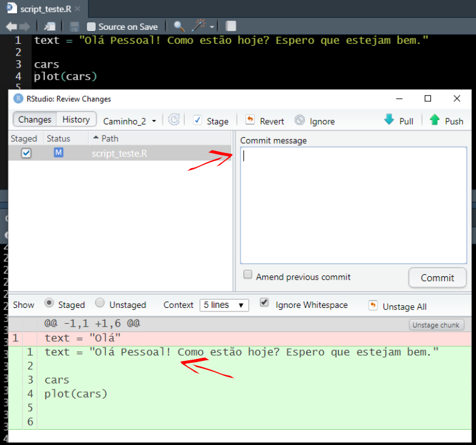

5.1 Construir documento comentado com os dados das bases abertas da atividade 3
# ocorrencias <- read.csv("data/occ_GBIF-OBIS_par_hepa.csv", header = TRUE)# # investigar niveis suspeitos
# world <- map_data("world")
#
# head(world)
#
#
# # mapa
# ggplot() +
# geom_polygon(data = world, aes(x = long, y = lat, group = group)) +
# coord_fixed() +
# theme_classic()# mapa + ocorrencias
# ggplot() +
# geom_polygon(data = world, aes(x = long, y = lat, group = group)) +
# coord_fixed() +
# theme_classic() +
# geom_point(data = ocorrencias, aes(x = decimalLongitude, y = decimalLatitude, color = datasetName)) +
# theme(legend.title = element_blank()) +
# labs(x = "longitude", y = "latitude", title = expression(italic("Paracanthurus hepatus")))# ggplot() +
# geom_polygon(data = world, aes(x = long, y = lat, group = group)) +
# coord_fixed() +
# theme_classic() +
# geom_point(data = ocorrencias, aes(x = decimalLongitude, y = decimalLatitude, color = datasetName, size = depth)) +
# #theme(legend.title = element_blank()) +
# labs(x = "longitude", y = "latitude", title = expression(italic("Paracanthurus hepatus")))leaflet() %>% addTiles() %>% addMarkers(~decimalLongitude, ~decimalLatitude, popup = ~as.character(datasetName), label = ~as.character(scientificName), clusterOptions = markerClusterOptions())
# ggplot() +
# theme_classic() +
# geom_point(data = ocorrencias, aes(x = decimalLatitude, y = depth, color = datasetName)) #+
# #theme(legend.title = element_blank()) +
# #labs(x = "longitude", y = "latitude", title = expression(italic("Paracanthurus hepatus")))5.1.1 Datasets form Bio-Oracle
layers_BO <- sdmpredictors::list_layers(“Bio-ORACLE”) layers_BO %>% dplyr::select(name, layer_code) %>% filter(name %in% c(“Phosphate concentration (mean at max depth)”, “Nitrate concentration (mean at max depth)”, “Light at bottom (mean at max depth)”, “Iron concentration (mean at max depth)”, “Dissolved oxygen concentration (range at max depth)”, “Dissolved oxygen concentration (minimum at max depth)”, “Dissolved oxygen concentration (mean at max depth)”, “Current velocity (mean at max depth)”, “Sea water temperature (mean at max depth)”, “Primary production (mean at max depth)”, “Sea water salinity (mean at max depth)”, “Silicate concentration (mean at max depth)”, “Sea surface temperature (mean)”))
options(sdmpredictors_datadir = “data/Bio-Oracle/”)
5.1.2 Download environmental data layers (Max. Temperature, Min. Salinity and Min. Nitrates at the sea bottom)
5.2 load from server
6 environment.bottom <- load_layers(layercodes = c(“BO2_curvelmean_bdmax”, “BO2_dissoxltmax_bdmax”, “BO2_salinitymean_bdmax”, “BO2_tempmean_ss”, “BO_calcite”, “BO21_tempmean_bdmax”),
7 equalarea=FALSE, rasterstack=TRUE)
7.1 load local source
environment.bottom <- sdmpredictors::load_layers(c(“BO_bathymean”, “BO2_curvelmean_bdmax”, “BO2_dissoxltmax_bdmax”, “BO2_salinitymean_bdmax”, “BO2_tempmean_ss”, “BO_calcite”, “BO21_tempmean_bdmax”), rasterstack=TRUE)
7.1.1 SITES
7.1.2 extract from rasters
7.2
library(sp) my.sites1 <- ocorrencias coordinates(my.sites1)=~decimalLongitude+decimalLatitude SpatialPoints(my.sites1, proj4string = CRS(“+proj=longlat +datum=WGS84”)) points <- SpatialPoints(my.sites1, proj4string=CRS(proj4string(environment.bottom)))
8 environmental
library(raster) store_data1 <- list() for (i in 1:nlayers(environment.bottom)){ store_data1[[i]] = extract(environment.bottom[[i]], points, buffer = 10, fun=mean, # what to value to extract df=F) }
names(store_data1) = names(environment.bottom) marine_data <- bind_cols(ocorrencias, as_tibble(store_data1)) %>% mutate(BO_bathymean = ifelse(BO_bathymean > 0, BO_bathymean*-1, BO_bathymean))
write.csv(marine_data, “data/raster_data_par_hepa.csv”, row.names = FALSE)
8.1 Workflow RStudio/Github
Nesta próxima etapa, vamos continuar a testar novas ferramentas do GitHub e usar comandos para testar novos caminhos sem alterar o repositório principal (branch e merge), além de começar a colaborar com outros usuários (fork, branch, pull request e merge).
PS: este tutorial de Git e GitHub foi adaptado do material criado pelos colegas Thiago Silveira e Ben Best.
8.1.1 Intermediário: branch e merge
Os comandos branch e merge são muito úteis quando queremos testar diferentes caminhos. Imagine que você quer fazer uma figura e segue uma linha de raciocínio. Depois de se deparar com o resultado final, você percebe que poderia seguir um caminho diferente. Para não perder a primeira versão, que está no ramo master, você pode criar um branch , uma diferente abordagem em paralelo. Abaixo um resumo que que será realizado nesta seção:
| Comando | Ação |
|---|---|
branch |
Cria um novo “ramo” em seu repositório |
merge |
Incorporar um ramo criado ao ramo “master” |
O comando git no terminal é git branch. No RStudio você pode criar um novo branch clicando botão como indicadoi abaixo.

Depois de criar o novo branch nomeado Caminho_2, foram realizadas algumas mudanças no script, fazendo um commit e push neste ramo. Depois disso, será feito um merge incorporando as modificações ao ramo principal master. No RStudio é possível somente criar os ramos pela aba Git, para fazer o merge você terá que usar linha de comando no Terminal. Note que na interface de commit, temos sempre que preencher o campo commit message. Abaixo, em verde, são destacadas as mudanças realizadas, vermelho a versão anterior.

Para fazer o merge do ramo Caminho_2, primeiro você precisa voltar para o ramo master. Na aba git do RStudio troque de Caminho_2 para master. Depois disso digite os seguintes comandos no Terminal, um de cada vez.
# Fazendo o "merge" de "Caminho_2" ao "master"
git merge Caminho_2
# Fazendo o "push" para o repositório
git pushVocê verá na aba Terminal algo semelhante a figura abaixo.

Voltando para o repositório no Github podemos visualizar a versão atualizada, mais upstream do repositório no ramo master.

8.1.2 Avançado: fork, branch, pull request e merge
Agora que já vimos como fazer as principais ações usando o Git e Github, a partir deste ponto podemos executar um grupo de comandos que consiste na grande vantagem de se usar o Github: a colaboração com controle de versão. Abaixo um resumo dos comandos abordados:
| Comando | Ação |
|---|---|
fork |
Copia um diretório do Github |
branch |
Cria um novo “ramo” em seu repositório |
pull request |
Solitação de contribuição |
merge |
Incorporar um ramo criado ao ramo “master” |
Para colaborar em um repositório você antes de mais nada copiar os arquivos para o seu Github. Essa ação é executada com o comando fork. Por exemplo, se dirija ao respositório de teste e localize no alto da página o botão fork. Depois escolha onde você gostaria de colocar, escolha seu usuário. No canto esquerdo da página mostrará que o repo está em seu usuário também.

Agora faça novamente os passos descritos em 4.2 Criando repositório no GitHub (ou REPO). Tenha certeza de criar uma nova pasta fora das pastas que você já está trabalhando.
Faça alguma alteração no script, insira uma linha de código, depois faça commit e push . Note que seu repositório será atualizado. Navegue até o respositório de teste recém clonado e clique em Contribute.

Aparecerá uma nova página comparando o script antigo com o novo.

Clique em Create pull request. Com o objetivo de facilitar a colaboração, é eficiente você comentar o objetivo da sua contribuição.

Clique novamente no botão Create pull request para confirmar sua contribuição. Visualize a página https://github.com/peld-iloc/repo_test e veja como ficou.

Agora que você fez um pull request, basta você aguardar o adminstrador do repositório analisar sua sugestão e fazer o merge no ramo master.
Esse foi um exercício simples de colaboração usando Git e Github. Para mais informações sobre o workflow usando o Github, acesse Github Guides. Um guia muito útil também é o Happy Git and Github for the useR.
Colabore, espalhe a palavra, mas cite as fontes!